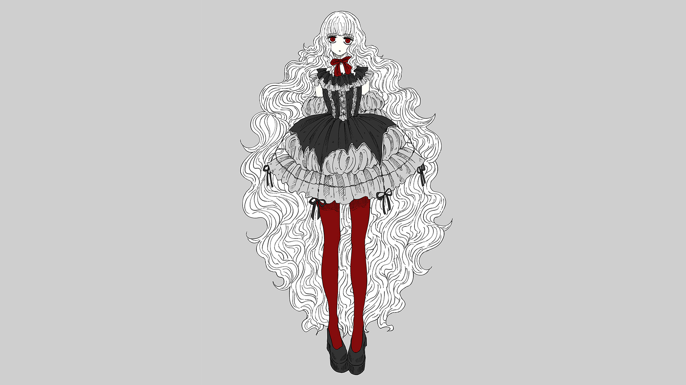

ABOUT
Akiho Kanamaru
1993年東京生まれ。多摩美術大学情報デザイン学科メディア芸術コース卒。
在学中から趣味でイラスト制作、同人誌制作を行っている。
イラストは静かな雰囲気、同人誌は少し後味の悪い話を中心に制作。
2024年2月から同年4月まで職業訓練校のWebデザイン学科に通っていた。
Skill
- CLIP STUDIO PAINT EX
- 使用歴7年。イラスト、同人誌作成に使用。
- Photoshop
- 使用歴8年。簡単なレタッチ、文字入れ、切り抜きや加工が可能。
- Illustrator
- 使用歴1年未満。図形による描写、簡単なロゴの作成が可能。
- HTML、css
- 使用歴2年。基本的なwebサイトの作成が可能。